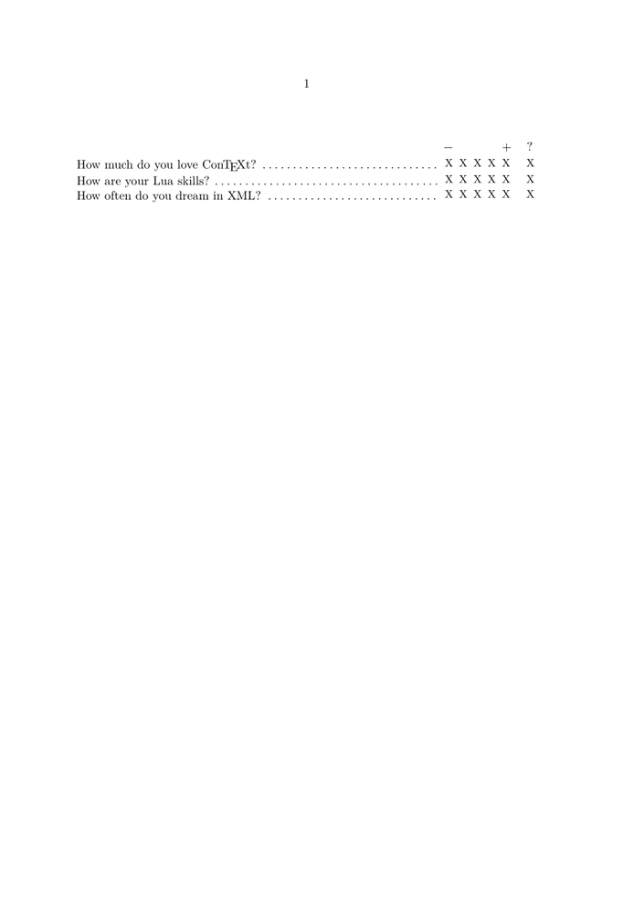

< Presentations | PDF navigation >
You can find more about interactive form elements in Widgets uncovered. It’s written for MkII, but still mostly valid.
Most of the following examples are from the manual.
Contents
Fields
Create a field “class” with \setupfield, then create single instances with \definefield, finally typeset it with \field.
That might look complicated, but you can use the same field several times, and the contents will automatically repeat themselves if you need the same content at several places, even on different pages. (Think e.g. of name, location and date in a set of forms.)
Relevant commands:
- \setupfield
- \definefield [name][type][setup name][content values][default content]
- \field [name]
Field types:
- line: one line of text
- text: more lines of text
- radio: radiobutton (only one of a group can be active)
- check: checkbox
- signature: electronic signature (since 2016-03-11)
Single fields
Since you often need fields only once, you can define your own shortcut macros:
\setupfield[MyFieldSetup][reset,horizontal][... options ...] \define[1]\MyField{\definefield[#1][line][MyFieldSetup]\field[#1]}
Text Entries
\setupfield[ShortLine][horizontal][width=2cm,height=2em] \definefield [Email] [line] [ShortLine] [] [sample@contextgarden.net] \field [Email] [your email]
Checkboxes
\setupfield[setup 3] [width=2cm, height=2cm, rulethickness=3pt, corner=round, framecolor=red] \definesymbol [yes] [{\externalfigure[mpcont.502]}] \definesymbol [no] [] \definefield [checkme][check] [setup 3] [yes,no] [no] \field[checkme]
Radiobuttons
Example from the manual:
\setupfield [LogoSetup] [width=4cm, height=4cm, frame=off, background=color, backgroundcolor=lightgray] \definefield[Logos] [radio] [LogoSetup][ConTeXt,PPCHTEX,TeXUtil] [PPCHTEX] \definesubfield [ConTeXt] [] [ConTeXtLogo] \definesubfield [PPCHTEX] [] [PPCHTEXLogo] \definesubfield [TeXUtil] [] [TeXUtilLogo] \definesymbol [ConTeXtLogo] [{\externalfigure[mpcont.502]}] \definesymbol [PPCHTEXLogo] [{\externalfigure[mpcont.503]}] \definesymbol [TeXUtilLogo] [{\externalfigure[mpcont.504]}] \hbox to \hsize{\hss\field[ConTeXt]\hss\field[PPCHTEX]\hss\field[TeXUtil]\hss}
As usual, first you need to define a class of fields (\setupfield). Then you define the (invisible) group of radio buttons (\definefield with "radio"). At last you define the single radio buttons with \definesubfield.
Arguments of \definefield:
- field name
- field type "radio"
- setup class, as defined by \setupfield
- list of field names that should be part of the group
- name of default (activated) button
Arguments of \definesubfield:
- field name
- setup class (default is inherited, but you can use a different one)
- content symbol, defined by \definesymbol
Setup for questionnaire
If you need a lot of similar radiobuttons, like in a questionnaire where you answer every question with a range choice, a meta definition makes sense. Fortunately it’s quite easy:
-
\setupinteraction[state=start] \setupfield [ChoiceSetup][width=1em,height=1em,corner=00] \definesymbol[X][X] % replace with dingbat symbol \def\Choice#1{\definefield[#1:main][radio][ChoiceSetup][#1:1,#1:2,#1:3,#1:4,#1:5,#1:0][#1:0]% \definesubfield [#1:1][][X]% \definesubfield [#1:2][][X]% \definesubfield [#1:3][][X]% \definesubfield [#1:4][][X]% \definesubfield [#1:5][][X]% \definesubfield [#1:0][][X]% \field[#1:1]\,\field[#1:2]\,\field[#1:3]\,\field[#1:4]\,\field[#1:5]\hskip1em\field[#1:0]} \def\ChoiceTitle{\hfill$-$\hskip4em$+$\hskip1.25em?\ \strut\par} \def\Question{\dosingleempty\doQuestion} % We need the "optional" parameter as reference \def\doQuestion[#1]#2{% \iffirstargument #2\dotfill\Choice{#1}\par \else #2\par \fi } \starttext \ChoiceTitle \Question[q:ctx]{How much do you love \CONTEXT?} \Question[q:lua]{How are your Lua skills?} \Question[q:xml]{How often do you dream in XML?} \stoptext
- 
Fillin fields
\fillinfield is meant for clozes (texts with gaps, like in questionnaires) and defined in the fields module (i.e. you need \usemodule[fields]).
\fillinfield[name]{text that defines field length}
Disable default validation with \setupfieldcategory[fillinfield][validate=], because it removes the contents from the field!
There are some commands with a similar purpose in the core that don’t use fields:
JavaScript
If you want to check or otherwise process the input of your forms, you need JavaScript to handle interaction. For simple forms without input validation, you don’t need this.
Beware: JavaScript in PDFs works only in Adobe Acrobat Reader/Professional (Win/Mac only) and very few other PDF editors, e.g. Qoppa’s PDF Studio (also on Linux) supports JS even in the free viewer, but used to crash on all forms created with TeX in the 2019 version, maybe this is fixed now.
\startJSpreamble {name} MyCounter = 0 ; \stopJSpreamble \startJScode {increment} MyCounter = MyCounter + 1 ; // or: ++MyCounter ; \stopJScode \goto {advance by one} [JS(increment)]
You can pass values to a JS function:
\startJScode {increment} MyCounter = MyCounter + JS_V_1 ; \stopJScode \goto {advance by five} [JS(increment{V{5}})]
- V{} is verbose, defaults to string
- S{} = as string
- R{} = as reference
- JS_V_n, JS_S_n, JS_R_n are the names of the variables
- JS_N keeps the number of arguments
Documentation
JavaScript in Acrobat is different than in a web context. Documentation is sparse. Debugging is only possible in Acrobat Pro, and also there very inconvenient. Additionally, Acrobat’s possibilities change with every version.
- JavaScript documentation at Adobe’s
- JavaScript API Reference for Acrobat 9
- Tutorial on JS in Acrobat 11
Examples
Setting a default value
Here we set a date field to the current date on opening the document. Additionally we have a button that can hide/show a form field.
\starttext \setupinteraction [state=start] \startJSpreamble {EXAMPLE} used now var d = new Date(); var df = this.getField("CurDate"); df.value = util.printd("dd.mm.yyyy", d); function toggleField(){ var f = this.getField("CurDate"); f.display = ! f.display; } \stopJSpreamble \setupfield[shortString][reset,horizontal][height=5mm, width=50mm, frame=off, bottomframe=on] \definefield[CurDate][line][shortString][][JavaScript should replace this text with the current date] Current date: \field[CurDate] \stoptext
Setting the current date
Similar, but more usable than the example above:
\starttext \setupinteraction [state=start] \startJSpreamble {EXAMPLE} used now function Dummy(){ return 0; } function setCurrentDate(fieldname) { var f = this.getField(fieldname); f.value = util.printd("yyyy-mm-dd", new Date()); } setCurrentDate("myDateField"); \stopJSpreamble \setupfield[dateString][reset,horizontal][width=5em,option=printable] \definefield[myDateField][line][dateString][][JavaScript should replace this text with the current date] Current date: \field[myDateField] \stoptext
Tricks and Traps
General
- Nothing happens without \setupinteraction [state=start] ! If you need an interactive version and a plain one (e.g. for print), then you must replace your form fields with something else (e.g. \framed ). Use Conditional processing with Modes .
MkIV
-
JS code was only copied to the PDF if there was a
\goto
referencing one of the defined functions! – This is actually a feature, you can get your JS without
\goto
, using the magic incantation
used now, as in the default value example. (This was fixed.)
- JS code for default values doesn’t work (reported 2015-04-01, still true 2015-10-07); default values are always used verbatim. (Unchecked if this is fixed.)
-
There is no
\setupfields(plural)!
MkII
This helps debugging:
\tracefieldstrue \showfields % typeset a table of field relations \logfields % logs field descriptions to a file fields.log
Samples
- Midgard PC sheet (RPG character sheet with lots of text fields in tables)